Der Batchbeleg dient dazu, bestehende Belege zu exportieren oder Belege von extern zu übernehmen. Voraussetzung dafür, dass ein Batchbeleg durchgeführt werden kann ist, dass im Programm WinLine START Vorlagen definiert wurden. Der Aufruf des Batchbeleges erfolgt im Menüpunkt…
1 WinLine FAKT
1 Erfassen
1 Batchbeleg
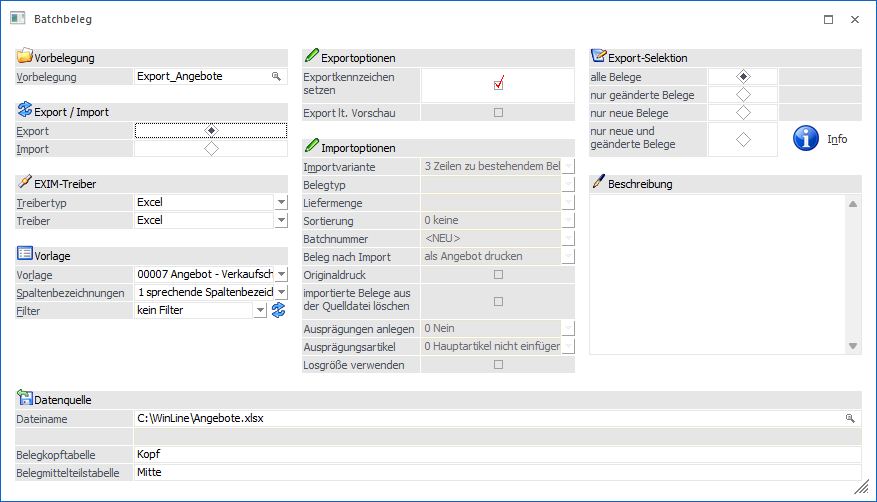
Vorbelegung
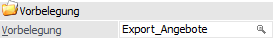
Ø Vorbelegung
Über die Vorbelegung können die Einstellungen eines Ex- bzw. Importvorgangs gespeichert werden. Wurde bereits eine Vorbelegung definiert, kann diese durch Drücken der F9-Taste gesucht werden. Wurde noch keine Vorbelegung definiert, kann diese durch eine Eingabe im Feld "Vorbelegung" angelegt werden. Wurden alle Eingaben durchgeführt, wird die Vorbelegung durch Drücken der F5-Taste bzw. des Buttons "Ok" gespeichert.
Hinweis
Wird mit einer bestehenden Vorbelegung gearbeitet und der Ex- bzw. Import mit Hilfe der Taste F5 bzw. des Buttons "Ok" gestartet, erfolgt eine Sicherheitsabfrage, ob mögliche Änderungen der Einstellungen in der Vorbelegung gespeichert werden sollen.

Ø Export/Import
Hier wird entschieden, ob Daten importiert oder exportiert werden sollen.
Hinweis
Ist in der Belegart des zu importierenden neuen Beleges eine Kontenvorlage hinterlegt, so werden die Einstellungen lt. dieser im neuen Beleg berücksichtigt!
Treiber

Ø Treibertyp
Aus der Auswahlliste muss ausgewählt werden, mit welchem Treibertyp der Ex-/Import durchgeführt werden soll. Hierbei stehen folgende Varianten zur Verfügung:
ü Excel
Der Ex-/Import erfolgt
über eine Excel-Datei.
ü XML
Der Ex-/Import erfolgt über
eine XML-Datei.
ü ODBC-Treiber
Der Ex-/Import
erfolgt über einen ODBC-Treiber.
Ø Treiber
Abhängig vom Treibertyp muss hier der gewünschte Treiber gewählt werden:
ü Excel
Es steht nur der Treiber
"Excel" zur Verfügung. Hierbei handelt es sich um eine von mesonic zur Verfügung
gestellten Treibervariante.
ü XML
Bei der Ausgabe nach XML
stehen die Treiber "XML (Webservice)" und "XML (Export)" zur Verfügung. Der
Unterschied besteht darin, dass beim "XML (Webservice)" die XML-Datei so erzeugt
wird, dass sie in weiterer Folge auch für das WinLine WebService verwendet
werden kann. Beim "XML (Export)" hingegen wird eine "normale" XML-Datei
erzeugt.
ü ODBC-Treiber
Bei Verwendung des
Treibertyps "ODBC-Treiber" muss an dieser Stelle die Auswahl des ODBC-Treibers
erfolgen. Dieser hat eine direkte Auswirkung auf die möglichen Eingabefelder des
Bereichs "Exportziel / Datenquelle".
Achtung
Die angebotenen ODBC-Treiber sind abhängig von der Installation des PCs , wobei alle vorhandenen 32-Bit ODBC-Treiber zur Verfügung stehen (mesonic ist für die Funktionsfähigkeit bzw. das Vorhandensein der Treiber nicht verantwortlich).
Hinweis
Je nachdem, welche ODBC-Treiber
verwendet werden bzw. welche ODBC-Treiber-Version verwendet wird, kann es zu
ungewünschten Verhalten des Exports bzw. Imports kommen, wenn Sonderzeichen im
Verzeichnisnamen oder im Datenbankname vorkommen. Aus diesem Grund wird, wenn
solche Sonderzeichen verwendet werden, eine entsprechende Hinweismeldung
ausgegeben:
Achtung - Treiberauswahl
Um sicherzustellen, dass Notizfelder in voller Länge exportiert werden, sollte je nach verwendetem Treiber (Excel-, Access-, Text- oder SQL-Treiber) der (letzte) englische auswählbare Treiber aus der Auswahlliste verwendet werden. D.h. ist die Auswahlmöglichkeit an Treibern der Reihenfolge nach z.B. "02 - Microsoft Access Driver (*.mdb)", "10 - Microsoft Access Treiber (*.mdb)" und "16 - Driver do Microsoft Access (*.mdb)", dann sollte in diesem Fall "02 - Microsoft Access Driver (*.mdb)" selektiert werden (d.h. der englische). Andernfalls wird das Notizfeld in der Regel nur mit 255 Zeichen exportiert.
Achtung - Textdateien
Wenn ein Export von Textdateien ausgeführt wird, so wird eine SCHEMA.INI-Datei angelegt, welche die Dateibeschreibung der Exportdatei beinhaltet.
Wenn sich die Vorlage ändert, so hat dieses keine Auswirkung auf die bereits erzeugte SCHEMA.INI-Datei und es würde die Fehlermeldung "Die Tabellen existieren bereits und haben einen anderen Aufbau als die gewählte Vorlage!" ausgegeben werden. Damit der Export wieder "normal" durchgeführt werden kann, muss dieses Dokument entsprechend angepasst oder gelöscht (und damit beim nächsten Export neu angelegt) werden. Ebenso bedarf es, dass die vorhandenen Exportdateien gelöscht werden.
Vorlage
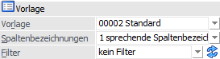
Ø Vorlage
An dieser Stelle wird die Vorlage definiert, welche für den Export bzw. Import verwendet werden soll.
Hinweis
Mit Hilfe der Vorlage wird definiert, welche Felder exportiert bzw. importiert werden sollen. Zusätzlich können Vorbelegungen hinterlegt werden.
Ø Spaltenbezeichnung
Hier kann ausgewählt werden, wie die Spaltenbezeichnungen behandelt werden sollen:
ü 0 - numerische
Spaltenbezeichnungen
Bei dieser Variante werden die Spalten nach den
Spaltenbezeichnungen gemäß Datenbank (z.B. C042) benannt.
Beispiel - numerische Spaltenbezeichnung
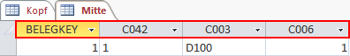
ü 1 - sprechende
Spaltenbezeichnungen
Bei dieser Variante erhalten die exportierten Spalten
den Namen des ursprünglichen Feldes.
Beispiel - sprechende Spaltenbezeichnung
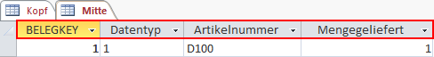
ü 2 - keine
Spaltenbezeichnungen
Bei dieser Variante, welche nur bei Verwendung des
Treibers "Excel" zur Verfügung steht, wird gar keine Spaltenüberschriftenzeile
exportiert.
Ø Filter
Durch Auswahl eines Filters aus der Auswahlliste kann der Export bzw. Import der Belege auf bestimmte Datensätze beschränkt werden (z.B. nur Belege eines speziellen Debitors oder Belege mit einem bestimmten Belegdatum).
Ø  Filter bearbeiten
Filter bearbeiten
Mit Hilfe des Buttons "Filter bearbeiten" kann ein neuer Filter kreiert bzw. ein bestehender Filter bearbeiten werden.
Exportoptionen
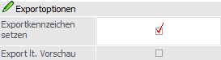
Ø Exportkennzeichen setzen
Durch Aktivierung dieser Option werden die Belege nach dem Export intern als exportiert gekennzeichnet. Hierüber ist es bei einem erneuten Export möglich die in der Zwischenzeit geänderten oder neuen Belege (siehe Bereich "Selektion") exakt zu bestimmen.
Ø Export lt. Vorschau
Die grundsätzlich zu exportierenden Belege können in der Vorschau überprüft und überarbeitet werden (siehe Button "Exportvorschau"). Sollen diese Änderungen für den Export berücksichtigt werden, so ist diese Option zu aktivieren.
Export-Selektion
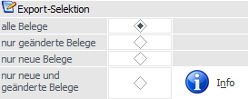
Ø Belegauswahl
Mit Hilfe der folgenden Auswahl kann definiert werden, welche Belege exportiert werden sollen.
ü alle Belege
Es werden alle
Belege exportiert.
ü nur geänderte Belege
Es werden
alle Belege exportiert, welche seit dem letzten Export gerechnet und / oder
gedruckt wurden. Grundvoraussetzung hierfür ist, dass bei dem letzten Exportlauf
die Option "Exportkennzeichen setzen" aktiviert war.
ü nur neue Belege
Es werden alle
Belege exportiert, welche seit dem letzten Export nur gespeichert (d.h. noch
nicht gerechnet und / oder gedruckt) wurden. Grundvoraussetzung hierfür ist,
dass bei dem letzten Exportlauf die Option "Exportkennzeichen setzen" aktiviert
war.
ü nur neue und geänderte
Belege
Es werden alle Belege exportiert, welche seit dem letzten Export
gespeichert, gerechnet oder gedruckt wurden. Grundvoraussetzung hierfür ist,
dass bei dem letzten Exportlauf die Option "Exportkennzeichen setzen" aktiviert
war.
Ø Info
Durch Anwahl des Buttons "Info" wird der aktuelle Datenstand kontrolliert und neben den Selektionstypen die Anzahl der gefundenen Belege angezeigt.
Beispiel
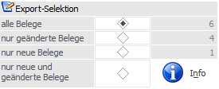
Importoptionen
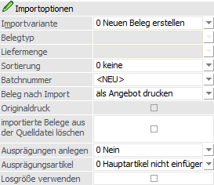
Ø Importvariante
An dieser Stelle wird definiert, um was für eine Art von Import es sich handelt. Hierbei stehen die folgenden Varianten zur Verfügung:
ü 0 - Neuen Beleg erstellen
Es
wird ein neuer Beleg erstellt.
ü 1 - Lieferschein zu Auftrag
importieren
Es wird ein Lieferschein zu einem bestehenden Auftrag importiert.
Hierbei ist zwingen erforderlich, dass eine Auftragsnummer beim Import angegeben
wird, damit der zu importierende Beleg als Lieferschein zur angegebenen
Auftragsnummer zugeordnet wird. Ist die Auftragsnummer nicht vorhanden oder
bereits abgearbeitet, wird ein neuer Beleg erstellt.
Hierbei ist auch eine
Überlieferung oder eine Erweiterung der Artikelzeilen möglich. Es wird jedoch
beim Import auf dem Übernahmeprotokoll bzw. beim Check der Belegzeilen vermerkt,
dass eine Überlieferung stattgefunden hat oder eine Artikelzeile hinzugefügt
wurde.
Technisch wird beim Import die Liefermenge in den Auftragsbeleg
zurückgeschrieben, wodurch aber noch kein Lieferschein erzeugt wird! D.h. nach
dem Import muss (um wirklich einen Lieferschein zu erhalten) der Belegdruck
gestartet werden, bzw. kann der Beleg nach dem Import auch gleich gedruckt
werden.
Hinweis 1 - Importfelder
Folgende Werte werden nicht importiert, auch wenn sie in der Importdatei und in der Vorlage vorhanden sind:
ü Belegart
ü Preisliste
ü Fremdwährung
ü Daten des Angebots (Nummer, Datum, Druckstatus)
ü Daten des Auftrags (Nummer, Datum, Druckstatus)
ü Laufnummer
ü Rechnungsadresse bei der Option Hauptkonto = Rechnungsadresse
ü Lieferadresse bei der Option Hauptkonto = Lieferadresse
Alle Zeilen mit einem anderen Datentyp als Artikel (Texte, Summenzeilen, ...) werden immer neu in den Beleg übernommen.
Hinweis 2 - Artikelzuordnung
Wenn im Beleg ein Artikel mehrmals vorhanden ist, dann muss bereits in der Belegvorlage die Spalte "Zeilennummer (intern)" (aus dem Bereich "Bestelldatei Mitte") integriert werden (dieser Wert kann auch exportiert werden). Wenn beim Import von Belegen in dieser Spalte ein Eintrag vorhanden ist und ein Artikel mehrmals im Beleg vorkommt, wird die Liefermenge aus der Importdatei in die Zeile in den Beleg geschrieben, in der Artikelnummer und Zeilennummer den Importdaten entsprechen. Wenn keine Zeilennummer vorhanden ist, wird der erste im Beleg vorkommende Artikel verwendet.
Achtung
Wenn in dieser Konstellation eine neue Artikelzeile mit dem gleichen Artikel gebildet werden soll, dann muss vor die Zeilennummer ein "-"-Zeichen (z.B. "-3") gestellt werden.
Hinweis 3 - Ausprägungen
Beim Import eines Lieferscheines
zu einem Auftrag kann es auch dazu kommen, dass es Hauptartikel aufzuteilen
gilt. D.h. importiert werden die Ausprägungszeilen und im betroffenen Beleg muss
der Hauptartikel aufgeteilt werden. Dazu muss die Spalte "Hauptartikelnummer" in
der Vorlage mit einem gültigen "Hauptartikel mit Ausprägungen" gefüllt sein und
als Artikel "Ausprägungen" dieses Hauptartikels importiert werden.
Beim
Starten des Imports durch Drücken des OK-Buttons werden dann die
Ausprägungszeilen in den Beleg eingefügt, die Liefermengen importiert und der
Hauptartikel mit der Summe der Ausprägungen "bebucht".
ü 2 - Rechnung zu Lieferschein
importieren
Es wird eine Rechnung (Faktura) zu einem bestehenden Lieferschein
importiert. Hierbei ist zwingen erforderlich, dass eine Lieferscheinnummer beim
Import angegeben wird, damit der zu importierende Beleg als Faktura zur
angegebenen Lieferscheinnummer zugeordnet wird. Ist die Rechnungsnummer nicht
vorhanden oder bereits abgearbeitet, wird ein neuer Beleg erstellt.
Hierbei
ist auch eine Erweiterung der Artikelzeilen möglich. Es wird jedoch beim Import
auf dem Übernahmeprotokoll bzw. beim Check in der Fehlerzeile unterhalb der
Tabelle vermerkt, dass eine Artikelzeile hinzugefügt wurde.
Technisch werden
beim Import die geänderten Daten (Preis, Rabatt, etc.) in den Lieferschein
zurückgeschrieben, wodurch aber noch keine Rechnung erzeugt wird! D.h. nach dem
Import muss (um wirklich eine Rechnung zu erhalten) der Belegdruck gestartet
werden.
Hinweis 1 - Importfelder
Folgende Werte werden nicht importiert, auch wenn sie in der Importdatei und in der Vorlage vorhanden sind:
ü Belegart
ü Preisliste
ü Fremdwährung
ü Daten des Angebots (Nummer, Datum, Druckstatus)
ü Daten des Auftrags (Nummer, Datum, Druckstatus)
ü Daten des Lieferscheins (Nummer, Datum, Druckstatus)
ü Laufnummer
ü Rechnungsadresse bei der Option Hauptkonto = Rechnungsadresse
ü Lieferadresse bei der Option Hauptkonto = Lieferadresse
ü Menge und Menge2
ü Colli
ü Einstandspreis und Einstandspreis-Kennzeichen
Beim Importieren einer
Eingangsfaktura zu einem Lieferschein können auch der Preis, der Rabatt 1, der
Rabatt 2 und die BNK nicht importiert werden, da diese Werte nur im
Eingangslieferschein editiert werden können.
Alle Zeilen mit einem anderen
Datentyp als Artikel (Texte, Summenzeilen,...) werden immer
neu in den Beleg übernommen.
Hinweis 2 - Artikelzuordnung
Wenn im Beleg ein Artikel mehrmals vorhanden ist, dann muss bereits in der Belegvorlage die Spalte "Zeilennummer (intern)" (aus dem Bereich "Bestelldatei Mitte") integriert werden (dieser Wert kann auch exportiert werden). Wenn beim Import von Belegen in dieser Spalte ein Eintrag vorhanden ist und ein Artikel mehrmals im Beleg vorkommt, wird die Liefermenge aus der Importdatei in die Zeile in den Beleg geschrieben, in der Artikelnummer und Zeilennummer den Importdaten entsprechen. Wenn keine Zeilennummer vorhanden ist, wird der erste im Beleg vorkommende Artikel verwendet.
ü 3 - Zeilen zu
bestehendem Beleg editieren
Mit Hilfe dieser Einstellung kann zwischen
Importdatei und Beleg ein Abgleich stattfinden, durch welchen bestehende
Belegzeilen geändert und nicht vorhandenen Zeilen ergänzt werden.
Die Verbindung zwischen Importdatei und Belegzeilen findet
hierbei über die Zeilennummer und (falls diese nicht vorhanden ist) über die
Artikelnummer statt. Sollte eine Belegzeile nicht gefunden werden, dann wird
diese als neue Zeile importiert.
Hinweis
Es können nur Angebote und Aufträge, sowie nicht gerechnete bzw. gedruckte Belege editiert werden. Der Druckstatus und die Belegnummer für die Stufe "Angebot / Auftrag" allerdings nur dann importiert, wenn der Beleg noch nicht als "Angebot/ Auftrag" gedruckt wurde. Bei einem gedruckten Beleg wie z.B. einem Auftrag muss die Laufnummer in der Importdatei verwendet werden, wenn das geänderte Lieferdatum importiert werden soll.
ü 4 - Beleg stornieren
Mit Hilfe
dieser Einstellung können gedruckte und nicht gerechnet / gedruckte Belege
storniert werden.
In der Importdatei werden hierfür die Inhalte der
Kopfdatenfelder "Kontonummer", "Laufnummer", "Belegnummern" und "Belegdatum"
geprüft, um eine eindeutige Belegzuordnung zu finden.
Hinweis
Zunächst wird über die Kombination "Kontonummer + Belegnummer" gesucht. Falls es mit der angegebenen Belegnummer mehrere bzw. keine Belege gibt, wird zusätzlich die Laufnummer bei der Suche berücksichtigt.
Weitere Voraussetzungen
Folgende Voraussetzungen müssen ebenfalls erfüllt werden:
ü Die Belegmittetabelle muss in der Importdatei vorhanden sein. Diese wird beim Import allerdings nicht angezeigt und auch nicht geprüft.
ü Der Beleg muss in der betroffenen Belegstufe den Druckstatus * oder D aufweisen. Belege ohne Belegnummer (und damit auch ohne Belegstufe) werden gelöscht, sofern sie nicht den Status *, D, L oder - haben.
Achtung
Bei den nachfolgenden Aktionen wird bei einem Storno über die Belegerfassung nach dem weiteren Vorgehen gefragt. Beim Storno über den Batchbeleg wird hierbei immer mit der Auswahl "Nein" gearbeitet:
ü Auftrag mit Produktionsauftrag
ü "Bei diesem Beleg ist ein Produktionsauftrag hinterlegt! Wollen Sie trotzdem stornieren?" (Option "Fragen" in den Fakt-Parametern) => Beleg wird nicht storniert
ü "Bei diesem Beleg ist ein Produktionsauftrag mit gedrucktem Materialentnahmeschein hinterlegt! Wollen Sie trotzdem stornieren?" (Option "Fragen" in den Fakt-Parametern) => Beleg wird nicht storniert
ü "Bei diesem Beleg ist ein Produktionsauftrag mit gedrucktem Arbeitsschein hinterlegt! Wollen Sie trotzdem stornieren?" (Option "Fragen" in den Fakt-Parametern) => Beleg wird nicht storniert
ü "Sollen die Produktionsaufträge ebenfalls gelöscht werden?" (Option in den Fakt-Parametern) => Produktionsauftrag wird nicht gelöscht
ü Auftrag mit Teillieferscheinen
ü "ACHTUNG: Für diesen Auftrag sind Teillieferscheine vorhanden, die mitstorniert werden. Wollen Sie fortfahren?" => Beleg wird nicht storniert
ü Auftrag mit Sammellieferscheinen
ü "ACHTUNG: Für diesen Auftrag sind Sammellieferscheine vorhanden, die mitstorniert werden. Wollen Sie fortfahren?" => Beleg wird nicht storniert
ü Auftrag mit Abschlagsrechnung
ü "ACHTUNG: Für diesen Auftrag sind Abschlagsrechnungen vorhanden. Wollen Sie den Auftrag trotzdem stornieren?"=> Beleg wird nicht storniert
ü Lieferantenbestellung mit Umbuchungsanforderung
ü "Beim Storno dieser Bestellung werden bestehende Umbuchungsanforderungen gelöscht. Wollen Sie fortfahren?" -> Beleg wird nicht storniert
ü 5 - Lieferschein editieren
Es
wird geprüft, ob der importierte Beleg ein gedruckter Lieferschein ist. Wenn in
der Importdatei keine Lieferscheinnummer vorhanden ist, wird der Beleg anhand
der Kombination Kontonummer-Laufnummer gesucht. Ansonsten wird der Beleg anhand
der Kontonummer und der Lieferscheinnummer gesucht. Der Beleg kann nicht
editiert werden, wenn…
ü … die Lieferscheinnummer angegeben ist und kein gedruckter Beleg mit dieser Lieferscheinnummer gefunden wird.
ü … der Beleg anhand der Laufnummer gesucht wird, und es für die Kombination Kontonummer-Laufnummer keinen Beleg gibt.
ü … der Beleg anhand der Laufnummer gesucht wird, aber keine Lieferscheinnummer vorhanden ist.
ü … der Beleg anhand der Laufnummer gesucht wird, und es ein erledigter Beleg (Druckstatus ----) ist.
ü … der Beleg anhand der Laufnummer gesucht wird, und es ein gelöschter Beleg (Druckstatus LLLL) ist.
ü … der Beleg anhand der Laufnummer gesucht wird, und der Beleg nicht als Lieferschein gedruckt ist.
ü … der Beleg als Faktura gedruckt ist.
ü … der Beleg zur Verarbeitung im Hintergrund vorgesehen ist.
ü … das Lieferscheindatum nicht im aktuellen Wirtschaftsjahr liegt.
Hinweise
Anders als bei den Optionen
"Lieferschein zu Auftrag" oder "Rechnung zu Lieferschein" wird der Beleg nicht
als neuer Beleg importiert, wenn er nicht gefunden wird. Für die Bearbeitung
gelten dieselben Einschränkungen, wie wenn man einen Lieferschein in der
Belegerfassung öffnet und erneut editieren würde. D.h. bei Handelsstücklisten
kann die Menge nicht geändert werden und bei aufgeteilten Hauptartikeln kann die
Menge nicht geändert werden.
Beim Ändern der Menge von aufgeteilten
Ausprägungsartikeln wird der Hauptartikel mit der Summe der Ausprägungen
bebucht. Lieferscheinnummer, Lieferscheindatum und Druckstatus des Lieferscheins
können nicht geändert werden. Neue Belegzeilen können hinzugefügt werden und
werden am Protokoll entsprechend vermerkt.
In der Auswahlliste "Beleg nach
Import" steht nur der Eintrag "als Lieferschein drucken" zur Verfügung. Nach dem
Import wird der Beleg immer als Lieferschein gedruckt. Wie im Belegerfassen wird
dabei der ursprüngliche Beleg zurückgebucht und der neue abgebucht. Das gilt für
"Lagerstand und Lagerwert (Artikelstamm, Artikelperioden, Artikeljournal)" und
"Lagerorte (Lagermanagement)".
Falls es beim Belegdruck zu einem Fehler
(Lagerstandsunterschreitung, Aufteilungsoptionen, usw.) kommt, werden alle
importierten Änderungen rückgängig gemacht.
Hinweis - Packageartikel
Bei Packageartikel werden die Mengen und Preise so importiert, wie sie in der Importdatei vorhanden sind. D.h. ein Abgleich wie im Belegerfassen findet nicht statt.
Hinweis - Reservierungsartikel
Wenn die Reservierung im Vorfeld im "Reservierungen bearbeiten" vorgenommen wird, kann die Menge des Reservierungsartikels ohne Probleme erhöht werden. Ein Verringern der Menge ist ohnehin immer möglich. Nur wenn die Menge erhöht wird und nicht reserviert ist, kommt es beim Druck zu einem Fehler und der gesamte Import wird rückgängig gemacht.
Ø Belegtyp
Diese Option steht nur zur Verfügung, wenn die Importvariante 1 (Lieferschein zu Auftrag importieren) oder 2 (Rechnung zu Lieferschein importieren) gewählt wurde. Dann kann entschieden werden, was passieren soll, wenn der Beleg, zu dem die Daten importiert werden sollen, bereits erledigt oder gelöscht ist. Dabei stehen folgende Optionen zur Verfügung:
ü 0 - gelöschte und erledigte Belege
als neue Belege importieren
Das ist die Standardeinstellung und mit dieser
Option wird dann ein neuer Beleg erstellt.
ü 1 - gelöschte und erledigte Belege
nicht berücksichtigen
Mit dieser Option wird dann das Erstellen des Beleges
nicht durchgeführt und entsprechend ausgewiesen (in der Bildschirmtabelle oder
im Importprotokoll).
Ø Liefermenge
Für die Import-Option "1 - Lieferschein zu Auftrag importieren" kann an dieser Stelle angegeben werden, wie mit Artikel verfahren werden soll, welche nicht in der Importdatei vorhanden sind.
ü 0 - Liefermenge bei nicht
vorhandenen Artikeln lt. Belegart berechnen
Die Liefermenge von Artikeln, die
nicht in der Importdatei vorhanden sind, wird nicht geändert. Damit greift beim
Belegdruck die Restmengenberechnung lt. Belegart.
Beispiel
ü Auftrag mit Artikel A (Bestellmenge 10) und Artikel B (Bestellmenge 10)
ü Es wird Artikel A mit Liefermenge 5 importiert.
ü Beim Lieferscheindruck werden 5 Stück Artikel A und 10 Stück Artikel B (Restmengenberechnung laut Belegart "0 - Differenz") geliefert.
ü 1 - Liefermenge bei nicht
vorhandenen Artikeln auf 0 setzen
Die Liefermenge von Artikeln, die nicht in
der Importdatei vorhanden sind, wird auf 0 gesetzt.
Beispiel
ü Auftrag mit Artikel A (Bestellmenge 10) und Artikel B (Bestellmenge 10)
ü Es wird Artikel A mit Liefermenge 5 importiert.
ü Beim Lieferscheindruck werden nur 5 Stück Artikel A, aber kein Stück Artikel B geliefert.
ü 2 - nur importierte Zeilen
drucken
Wenn dieser Eintrag bei der Option "Lieferschein zu Auftrag
importieren" gesetzt ist und der importierte Beleg gleich als Lieferschein
gedruckt wird, werden nur diese Zeilen übernommen und die anderen Zeilen bleiben
mit allen Einstellungen (Packlistenflag, Kommissionierung, Liefermenge)
erhalten.
Beispiel
ü Auftrag mit Artikel A (Bestellmenge 10) und Artikel B (Bestellmenge 10)
ü Im Kundenbestellungen bearbeiten werden beide Artikel vorgeschlagen zum Ausliefern.
ü Die Kommissionierung oder die packliste wir im Original ausgegeben.
ü In der Importdatei befindet sich nur der Artikel A, mit der Option wird auch nur in den Lieferschein der Artikel A übernommen. Der Artikel B bleibt mit dem Kennzeichen für den Packlistendruck weiterhin im Auftrag stehen.
Ø Sortierung
Mit Hilfe dieser Einstellung kann gesteuert werden, wie die Mittelteilszeilen des Belegs beim Import sortiert werden sollen. Hierbei stehen die Auswahlen "1 - nach der internen Zeilennummer" bzw. "2 - nach der Sortierspalte" nur dann zur Verfügung, wenn in der verwendeten Vorlage entweder das Feld "Zeilennummer (intern)" und / oder das Feld "Sortierung" vorhanden ist.
ü 0 - keine
Mit dieser
Einstellung werden die Mittelteilsteilen ohne weiteres Sortierkriterium
importiert.
ü 1 - nach der internen
Zeilennummer
Diese Option steht nur dann zur Verfügung, wenn das Feld
"Zeilennummer (intern)" in der Vorlage hinterlegt wurde. Dadurch werden die
Mittelteilszeilen so importiert, wie die Reihenfolge im Feld "Zeilennummer
(intern)" vorgegeben ist.
ü 2 - nach der
Sortierspalte
Diese Option steht nur dann zur Verfügung, wenn das Feld "
Sortierung" in der Vorlage hinterlegt wurde. Dadurch werden die
Mittelteilszeilen so importiert, wie die Reihenfolge im Feld " Sortierung"
vorgegeben ist. Das Feld selbst bzw. der Feldinhalt wird aber nicht
importiert.
Ø Batchnummer
Aus der Auswahlbox kann entweder ein bestehender Batch ausgewählt werden oder mit Hilfe der Option <NEU> eine neue Batchnummer erstellt werden (neue Batchnummern setzen sich aus den Elementen "aktuelles Datum" und "aktuelle Uhrzeit" zusammensetzt). Existiert für den aktuellen Tag bereits eine Batchnummer, dann wird diese automatisch beim Start des Fensters vorgeschlagen und kann geändert werden.
Beim Import wird die Nummer in die importierten Belege geschrieben (gilt für alle Import-Optionen) und kann in weiterer Folge beim Belegdruck ausgewählt werden, womit importierte Belege zusammengefasst ausgedruckt werden können.
Hinweis 1
Die Batchnummer wird erst dann wieder "freigegeben", wenn alle Belege, die dem Batch angehören, reorganisiert wurden.
Hinweis 2
Wird ein Auftrag in einen Lieferschein umgewandelt, so wird die Batchnummer im Auftrag entfernt.
Ø Beleg nach Import
An dieser Stelle kann für den Import definiert werden, ob und in welcher Belegstufe die importierten Belege gedruckt werden sollen. Folgende Varianten stehen zur Verfügung:
ü nicht drucken
Die Belege werden
als nicht gerechnete / nicht gedruckte Belege importiert.
ü als Angebot drucken
Die Belege
werden importiert und automatisch in der Stufe "1 - Angebot" bzw. "5 - L.
Anfrage" gedruckt.
ü als Auftrag drucken
Die Belege
werden importiert und automatisch in der Stufe "2 - Auftrag" bzw. "6 - L.
Bestellung" gedruckt.
ü als Lieferschein drucken
Die
Belege werden importiert und automatisch in der Stufe "3 - Lieferschein" bzw. "7
- L. Lieferschein" gedruckt.
ü als Faktura drucken
Die Belege
werden importiert und automatisch in der Stufe "4 - Faktura" bzw. "8 - L.
Faktura" gedruckt.
Hinweis 1
Wenn während des Belegdrucks ein Fehler auftritt (z.B. aufgrund einer Lagerstandsunterschreitung) wird die entsprechende Meldung am Protokoll ausgegeben.
Voraussetzungen
Für den automatischen Belegdruck gelten folgende Voraussetzungen / Bedingungen:
ü Es können nur Belege gedruckt werden, welche in der angegebenen Stufe den Druckstatus "M" oder "A" aufweisen.
ü Bei einem Import mit der Option "1 - Lieferschein zu Auftrag importieren" kann der Beleg nur als Lieferschein gedruckt werden.
ü Bei einem Import mit der Option "2 - Rechnung zu Lieferschein importieren" kann der Beleg nur als Rechnung gedruckt werden.
ü Bei einem Import mit der Option "4 - Beleg stornieren" kann der Beleg nicht gedruckt werden.
ü Falls in der Belegart definiert wurde, dass beim Druck ein Workflow geschrieben werden soll, dann wird dieses im Anschluss an den Import und Belegdruck aller Belege durchgeführt. Hierbei wird kein extra Fenster geöffnet (d.h. die Option "Fenster öffnen" aus der Workflow-Vorlage wird mit der Einstellung "0 - nie öffnen" ausgeführt).
Hinweis 2
Wenn mehrere Belege in der Importdatei vorhanden sind und gedruckt werden sollen, dann wird ein Beleg importiert und im Anschluss daran direkt gedruckt (anschließend der nächste Beleg, etc.). Dadurch ist es z.B. möglich, mehrere Teillieferscheine zu einem Beleg über eine Importdatei zu importieren und zu drucken.
Ø Originaldruck
Wird diese Checkbox aktiviert, wird der Autoarchiveintrag von bereits gedruckten Angeboten aktualisiert. Diese Checkbox kann nur bei der folgenden Einstellung aktiviert werden: Importvariante = "3 Zeilen zu bestehenden Beleg importieren" und "Beleg nach Import als Angebot drucken".
Ø Importierte Belege aus der Quelldatei löschen
Durch Aktivierung dieser Option werden Belege, die aus externen Quellen in die WinLine importiert werden, nach erfolgtem Import aus der Datenquelle entfernt. Diese Option stellt sicher, dass Belege nicht irrtümlich zweimal importiert werden.
Achtung
Das Löschen der Belege aus der Importtabelle findet anhand der Laufnummer statt, d.h. dieses Feld muss in der Importtabelle vorhanden sein, ansonsten können die Daten aus der "Quelle" nicht gelöscht werden.
Hinweis:
Bei Verwendung des Treibertyps "Excel" steht diese Option nicht zur Verfügung.
Ø Ausprägungen anlegen
Wenn in der Importdatei eine Hauptartikelnummer und entweder "Ausprägung1", "Ausprägung2" oder die "Charge- bzw. Identnummer" vorhanden ist, wird versucht, den passenden Artikel zu finden. Hier ist es nicht relevant, ob und welche Nummer in der Importspalte "Artikelnummer" vorhanden ist. Hierbei finden folgende Prüfungen statt:
ü Ist die Hauptartikelnummer ein gültiger "Hauptartikel mit Ausprägungen"?
ü Sind die eingegebenen Ausprägungen angelegt?
ü Sind die Ausprägungen gemäß der Ausprägungsgruppe des Hauptartikels erlaubt?
Sollten nun keine passenden Artikel gefunden werden, dann kann mit Hilfe der Option "Ausprägungen anlegen" der weitere Ablauf bestimmt werden:
ü Nein
Wird die Option "Nein"
verwendet und wird der zu importierende Artikel trotz der oben genannten Infos
nicht gefunden, erfolgt eine Fehlermeldung.
ü Ja, wenn noch nicht
vorhanden
Ist diese Option aktiviert und der Artikel kann nicht gefunden
werden, so wird der Ausprägungsartikel automatisch angelegt. Dabei wird bei
Chargenartikel der zuletzt verwendete (interne!) Chargenzähler in den
Hauptartikel zurückgeschrieben bzw. der Ausprägungsbereich beim Hauptartikel
automatisch erweitert.
ü Chargen immer anlegen (auch wenn
bereits vorhanden)
Diese Option wird nur bei Chargen-, LIFO- und FIFO-Artikel
unterstützt. Dabei wird bei jeder Chargen-Nummer ein eigener Artikel angelegt,
unabhängig davon, ob die Charge bereits vorhanden ist oder nicht (die Werte
werden nicht kumuliert). Wenn diese Option gesetzt ist und damit ein "normaler"
Ausprägungsartikel oder ein Artikel mit Seriennummern importiert wird, wird die
Option "Ja, wenn noch nicht vorhanden" verwendet.
Ø Ausprägungsartikel
An dieser Stelle kann definiert werden, ob bei einem Import von Belegen mit ausgeprägten Artikeln die zugehörigen Haupt- bzw. Zwischenartikel automatisch eingefügt werden sollen.
ü 0 - Hauptartikel nicht
einfügen
Es werden die ausgeprägten Artikelzeilen importiert und die
zugehörigen Haupt- bzw. Zwischenartikeln nicht eingefügt.
ü 1 - Hauptartikel einfügen
Es
werden die ausgeprägten Artikelzeilen importiert und zu diesen automatisch die
zugehörigen Hauptartikel eingefügt.
ü 2 - Hauptartikel und
Zwischenartikel einfügen
Es werden die ausgeprägten Artikelzeilen importiert
und zu diesen automatisch die zugehörigen Haupt- und alle möglichen
Zwischenartikel eingefügt.
Beispiele
ü Bei Artikel mit 2 Ausprägungen wird als Zwischenartikel der Artikel mit Ausprägung1 eingefügt.
ü Bei Artikel mit 1 Ausprägung und Chargen- / Identnummer wird als Zwischenartikel der Artikel mit Ausprägung1 eingefügt.
ü Bei Artikel mit 2 Ausprägungen und Chargen- / Identnummer werden als Zwischenartikel der Artikel mit Ausprägung1 und der Artikel mit Ausprägung1 und Ausprägung2 eingefügt.
Hinweis zu den Optionen 1 und 2
Wenn 2 oder mehr Ausprägungen des gleichen Hauptartikels hintereinander in der Importdatei existieren und der Import in dieser Reihenfolge vorgenommen wird, dann wird nur 1 Haupt- und / oder Zwischenartikel für die Ausprägungen eingefügt.
Ø Losgröße berücksichtigen
Mit Hilfe dieser Einstellung kann definiert werden, ob die Losgröße bei einem Import von neuen Belegen (Option "0 - Neuen Beleg erstellen") berücksichtigt werden soll. D.h. die Menge der Belegzeilen wird automatisch gemäß Losgröße angepasst.
Hinweis zu Verkaufsbelegen
Die Losgrößenkorrektur wird nur durchgeführt, wenn auf die Losgröße lt. Artikelstamm (WinLine FAKT - Stammdaten - Artikelstamm - Artikel - Register "Preise" - Unterregister "Preise" - Option "Losgrößenprüfung (VK)") automatisch aufgefüllt werden soll. Als Losgröße wird die Standardlosgröße (Feld "Losgröße Verkauf") genutzt.
Hinweis zu Einkaufsbelegen
Die Losgrößenkorrektur wird immer durchgeführt. Als Losgröße wird die Standardlosgröße (Feld "Losgröße Einkauf") genutzt.
Beschreibung

Ø Beschreibung
Wenn eine Vorbelegung verwendet wird, dann kann in diesem Feld eine genaue Beschreibung des Vorgangs hinterlegt werden. Diese Information kann in weiterer Folge auch im EXIM-Center, im Quick-EXIM oder im ActionServer eingesehen werden.
Datenquelle
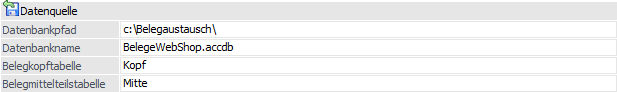
Ø Beschreibung von Datei bzw. Datenbank
In Abhängigkeit des gewählten Treibers werden in diesem Bereich Felder angezeigt, in denen Ziel (Bereich in den die Daten aus der WinLine kommend abgespeichert werden) bzw. Quelle (Bereich aus dem die Daten in die WinLine importiert werden) beschrieben werden. Im einfachsten Fall werden zwei Dateinamen angegeben in denen die Belegkopfzeilen und die Belegmittelteilszeilen gespeichert werden. Dies ist beim Texttreiber der Fall.
Bei der Wahl von Datenbanken als Ziel oder Quelle, müssen der Datenbankpfad, der Datenbankname und die Tabellennamen für Belegkopf und Belegmitte eingegeben werden.
Achtung - ODBC-Treiber
Der ODBC-Treiber kann zwar innerhalb von Access-Dateien und SQL-Datenbanken Tabellen erzeugen und diese Tabellen mit Datensätzen füllen, er kann aber nicht die Access-Datei bzw. die Datenbank selbst erstellen. Diese muss bereits vorhanden sein.
Hinweis
Die Verbindung zwischen Belegkopf und den zugehörigen Belegmittelteilen wird durch die eindeutige Belegnummer hergestellt. Diese ist sowohl im Belegmittelteil als auch in den Belegköpfen automatisch enthalten.
Buttons
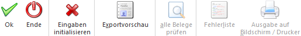
Ø Ok
Durch Anwahl des Buttons "Ok" bzw. der Taste F5 wird der Export bzw. Import durchgeführt.
Hinweis zum Import
Beim Import wird zunächst automatisch in einen Prüfbereich gewechselt, in welchem die Belege in 2 Tabellen dargestellt werden (Belegkopf und Belegmitte). Bevor die Belege importiert werden können, müssen hier die Daten auf Korrektheit geprüft werden.
Ø Ende
Durch Drücken des Buttons "Ende" bzw. der Taste ESC wird das Fenster geschlossen und alle Einstellungen verworfen.
Ø Eingaben initialisieren
Durch Anklicken dieses Buttons werden alle getätigten Einstellungen verworfen wodurch eine neue Selektion durchgeführt werden.
Hinweis
Wird mit einer Vorbelegung gearbeitet, dann kann diese direkt gelöscht werden.
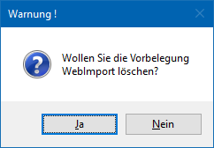
Ø Exportvorschau (nur bei Export)
Durch Drücken des Buttons "Exportvorschau" werden in einem neuen Fenster die Datensätze, die auf Grund der vorgenommenen Einstellungen exportiert werden würden, angezeigt. Wenn die Option "Export lt. Vorschau" aktiviert wurde, dann kann dort der Export editiert werden.
Ø Alle Belege prüfen (nur bei Import)
Dieser Button steht nur in der Importprüfung zur Verfügung.
Ø Fehlerliste (nur bei Import)
Dieser Button steht nur in der Importprüfung zur Verfügung.
Ø Ausgabe auf Bildschirm / Drucker
Dieser Button steht nur in der Importprüfung zur Verfügung.
Der Batchbeleg bietet eine Reihe von Anwendungsmöglichkeiten.
ü Filial/Zentral Lösung
ü Außendienstanbindung
ü Austausch von Belegen mit anderen Programmen
ü Schnittstelle zu EDI
Hinweis zum Export/Import von Belege inkl. Zahlungen aus der WEBEdition
ü Die Zahlungsart steht in den Belegvorlagen zum Export und Import zur Verfügung.
ü Die Felder "Text aus Zahlung" und "Zahlungsbetrag" stehen in den Belegvorlagen sowohl als Import als auch als Exportfelder zur Verfügung
ü Zum Import bzw. Export der Zahlungsart wird nicht die interne Nummer, sondern die Zahlungsbezeichnung verwendet.
ü Beim Import der Zahlungsart wird geprüft ob es sich um eine gültige Zahlungsart handelt, ob das Flag Einkauf/Verkauf richtig gesetzt ist und ob die Zahlungsart lt. Belegart erlaubt ist.
ü Ist im Beleg eine Zahlungsart vorhanden, so wird beim Belegdruck ab der Stufe Auftrag eine Zeile in die Zahlungstabelle und in die Finanzbuchhaltung geschrieben. Anschließend wird die Zahlungsart wieder aus dem Beleg gelöscht.
Hinweis
Die Zahlung wird bei Teillieferscheinen NICHT durchgeführt.